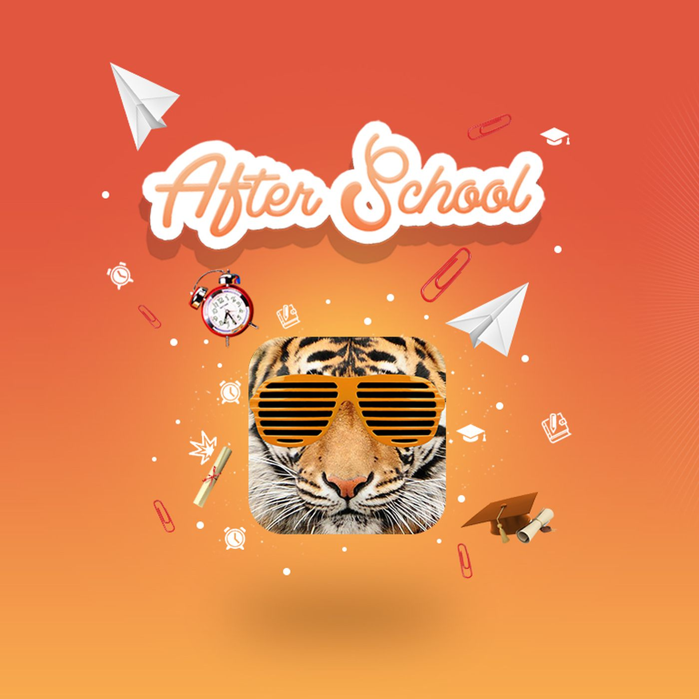

Written by Sofia La Rosa
Anonymity is a social issue that has been questioned since the beginning of the development of internet presence. As technology increases, the more customer usage and information is consumed from all age groups. From the drastic increment of usage over the past 2 decades, many argue over the importance and value of anonymity. Anonymity is the condition of being anonymous, specifically in an online presence. With the increment in usage of social media, parents worry over their child's mental health, social media presence, and how much access they have to information. This can be especially stressful to parents who are still learning how to manage technology and other forms of media. Without having a proper basis of knowledge over the topic, it becomes difficult to manage a child's intake of the quantity and quality of information. With the benefit of anonymity, kids, teens, and adults are able to express their creativity, opinions, and beliefs without having the constant fear of judgement, bullyiing, and many other repercussions.
In this TedTalk, creator of previous app 'After School', Michael Callahan talks about his experience and inspiration in creating a space where teens can seek help for emotional trauma anonymously. The app was very successful until discontinued in 2019 due to filtering issues.
